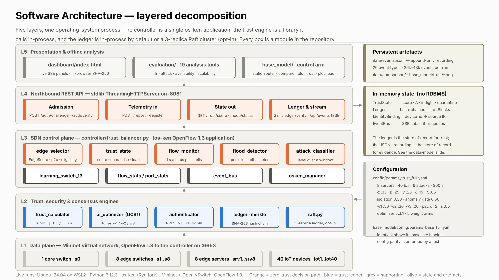
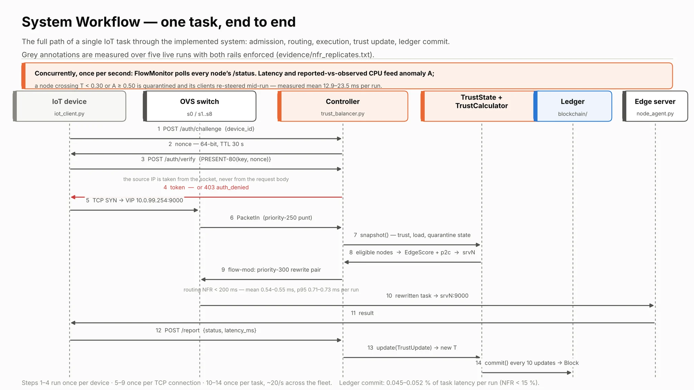
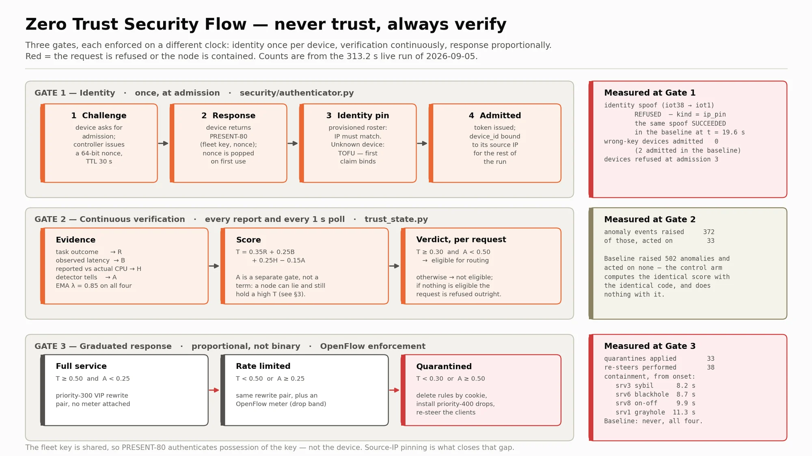
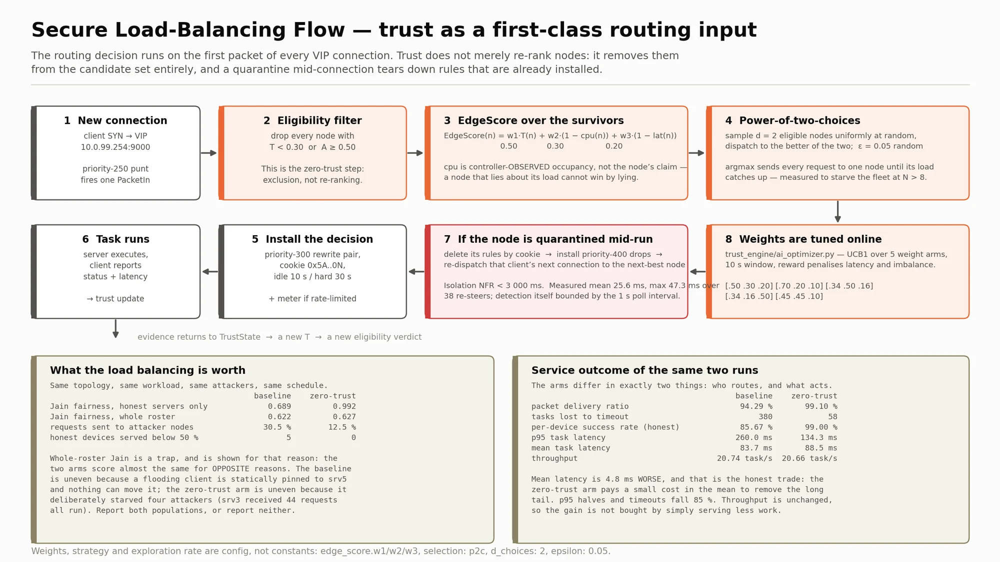
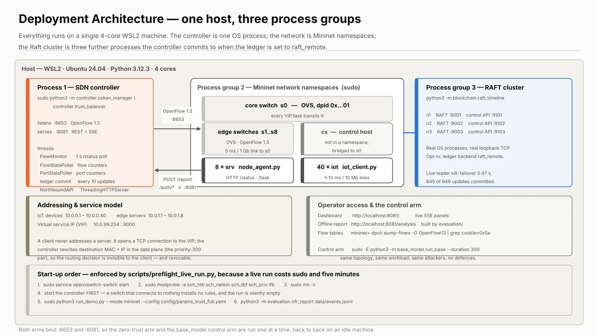
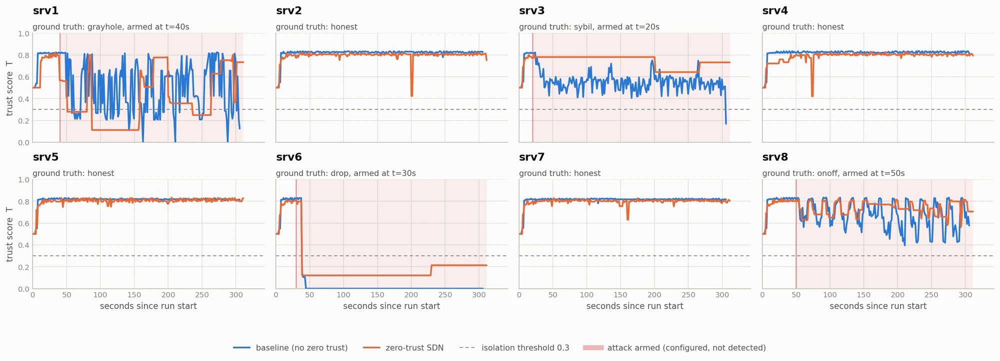
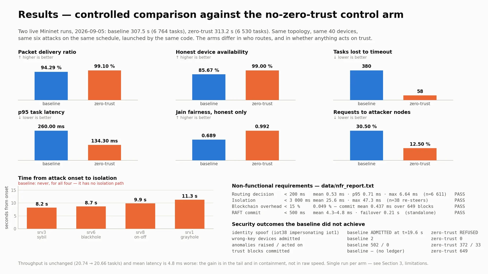
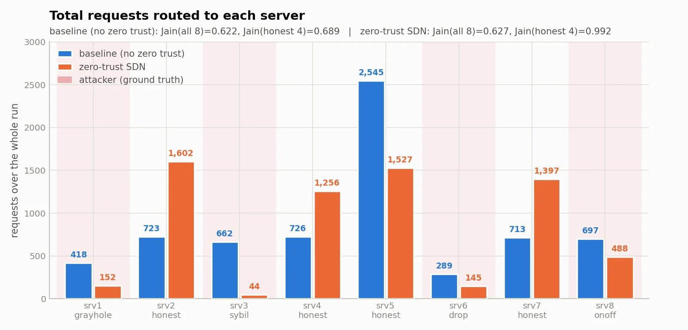
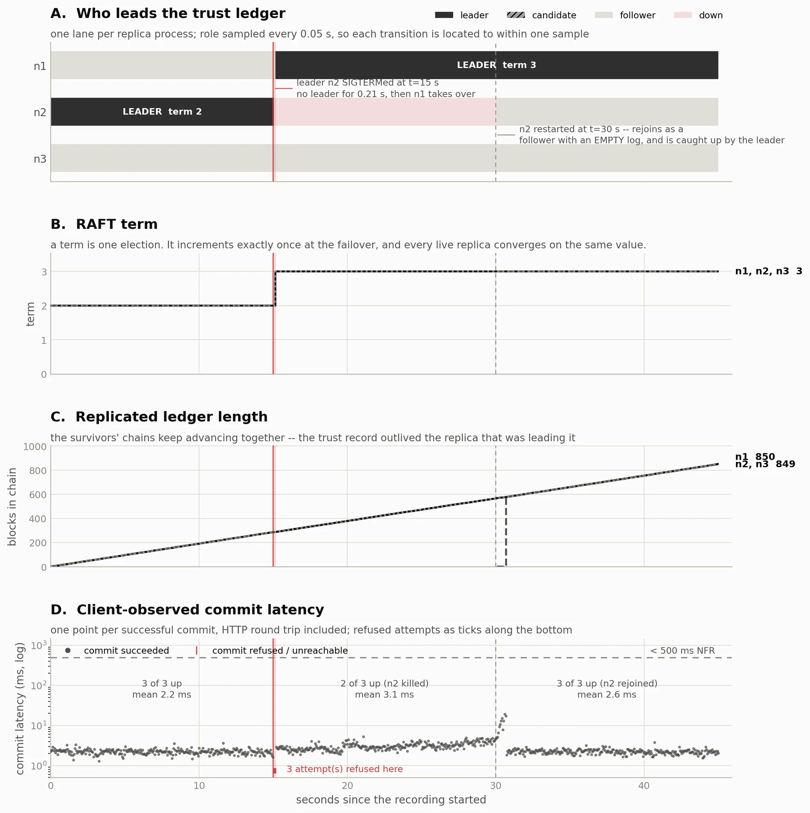

23CSE498 Project Phase 2, Team 50
Zero Trust–Enabled SDN Architecture for Secure and Intelligent Load Balancing in Edge Networks
Load balancers decide where to send work based on what servers say about themselves. Our SDN controller decides from what it observes instead. It scores every edge server on measured behaviour, and when a server misbehaves it revokes that server in the data plane as real OpenFlow rules, while a hash-chained ledger records why.
0.44 never falls below the 0.30 isolation threshold, so the published trust formula alone can never isolate a competent liar. We added an independent anomaly gate that quarantines on behaviour, whatever the score. Our test suite proves this against the real calculator.
- 8 of 8
- attacks detected and placed in the right family
- 8.2–11.3 s
- from attack onset to isolation; the baseline never isolates
- 4 of 4
- non-functional requirements pass on the live run
- 1,004
- automated tests, 993 passing, 11 skipped, 0 failing
Problem statement
Can an SDN control plane continuously verify edge servers using observed rather than claimed behaviour, and enforce the verdict in the data plane fast enough to matter?
The perimeter fails at the edge
Edge servers sit in roadside cabinets, factory floors and campus racks. Any of them can be opened, rented out, misconfigured or simply selfish. Round-robin and least-connections assume every backend is honest and does its work; neither can ever notice when one isn't.
Self-reported telemetry is easy to game
Kubernetes, cloud auto-scalers and MEC orchestrators all schedule on what nodes claim about themselves. A node that under-reports its load attracts traffic. The attacker breaks no cryptography; it only lies in a field everybody believes.
Zero Trust is a policy, not a mechanism
NIST SP 800-207 says never trust, always verify, continuously. Most products verify users and devices at login. Verifying the serving infrastructure itself, continuously, with routing consequences, is far less settled. That gap is where this project works.
Scope. We demonstrate one mechanism, behavioural trust plus SDN enforcement, under six modelled attacks, in an emulated network (Mininet with real Open vSwitch and OpenFlow 1.3). We don't claim to solve Zero Trust for edge networks in general, and we don't claim production deployment.
Project objectives
-
Score servers on behaviour, continuously
Compute a trust score for every edge server from task outcomes, response time, honesty about load and anomaly signals, updated after every interaction.
-
Route by trust and load together
Send each new connection to a server that is both trusted and not overloaded, using an EdgeScore with power-of-two-choices sampling.
-
Enforce verdicts in the data plane
Quarantine a misbehaving server as real OpenFlow rules and re-steer its in-flight work, within a 3-second bound.
-
Admit only real devices
Authenticate IoT devices with a PRESENT-80 challenge–response, pinned to each device's provisioned source IP.
-
Keep a tamper-evident record
Commit every trust update to a SHA-256 hash-chained ledger with a Merkle root per block, replicated by RAFT.
-
Prove it against a control arm
Run the same network, workload and attacks with and without zero trust, and back the difference with statistics over 600 seeded runs.
Methodology
The product is an os-ken (Ryu fork) OpenFlow 1.3 controller application with a REST and server-sent-events API and a live dashboard. Mininet, the edge-server agents and the IoT clients are its test harness.


How one task flows
-
Admission, once per device
The device requests a 64-bit nonce, encrypts it under PRESENT-80 and sends it back. The controller checks the response and the source IP against the provisioned roster. Failure returns 403 and logs the reason.
-
Routing, once per connection
The device connects to a virtual IP. The switch asks the controller, which filters to eligible servers, samples two, scores them by EdgeScore and installs rewrite rules to the winner.
-
Execution and verdict, once per task
The server does real work, the client reports the outcome and latency, and trust is updated. Every second the controller also polls each server's status and compares claims with observations.
-
Enforcement, when a server fails verification
Trust below 0.30, or the anomaly gate firing, triggers one cookie-matched rule delete, drop rules, and re-steering of in-flight work. A probation path lets a recovered server earn its way back.
The trust model
T = α·R̄ + β·B̄ + γ·H̄ − δ·Ā
α = 0.35, β = 0.25, γ = 0.25, δ = 0.15, with exponential decay λ = 0.85
| Term | Measured from |
|---|---|
| R̄ Reliability | Completed versus failed tasks |
| B̄ Behaviour | Response time against the fleet median |
| H̄ Honesty | Claimed load versus the duty cycle the controller derives |
| Ā Anomaly | Latency, timeout-rate, honesty and flood tells |
Isolation threshold 0.30. Anomaly gate 0.50. Routing uses EdgeScore w₁·T + w₂·(1 − cpu) + w₃·(1 − latency), with weights tuned online by a UCB1 bandit.
Six attacks, each with a delayed onset
| Attack | How it is caught |
|---|---|
| Sybil (load liar) | Claims to be idle but answers slowly: latency tell |
| Blackhole | Drops every task: timeout-rate tell |
| Grayhole | Drops half its tasks: timeout rate over a window |
| On-off | Alternates honest and hostile phases: sustained intermittency |
| DDoS flood | A client sends 24× the normal rate: flood detector, keyed on the client |
| Identity spoof | Holds the real key, claims another device: source-IP pin |
Devices with the wrong key entirely are refused at admission as a seventh class.








Technology stack
- Controller os-ken, OpenFlow 1.3
- Network Mininet, Open vSwitch
- Language Python 3.14
- Crypto PRESENT-80, SHA-256, Merkle trees
- Consensus RAFT, 3 replicas over TCP
- Analysis NumPy, SciPy, Matplotlib
- Testing pytest
- Host Ubuntu 26.04 on WSL2
The original plan named Ryu. Ryu can't run above Python 3.13 and the target OS ships only 3.14, so we use os-ken, its maintained fork with the same API.
Results so far
Two live runs on 5 September 2026: the same 8 servers, 40 devices and six attacks on the same schedule. The arms differ only in who decides where a connection goes and whether anything acts on trust.
| Metric | Baseline | Zero trust | What it means |
|---|---|---|---|
| Packet delivery ratio | 94.29 % | 99.10 % | Fewer tasks lost outright |
| Honest-device availability | 85.67 % | 99.00 % | The service honest devices actually received |
| Honest devices served below 50 % | 5 | 0 | Nobody left starving behind a bad server |
| Tasks lost to timeout | 380 | 58 | 85 % fewer |
| p95 task latency | 260.0 ms | 134.3 ms | The slow tail halves |
| Mean task latency | 83.7 ms | 88.5 ms | We lose by 4.8 ms; see below |
| Throughput | 20.74 task/s | 20.66 task/s | Unchanged, so the gain isn't bought by serving less |
| Requests routed to attackers | 30.5 % | 12.5 % | Less than half as much work handed to attackers |
| Identity spoof | Admitted | Refused | The baseline ran 130 tasks under a stolen identity |
| Wrong-key devices admitted | 2 | 0 | The baseline has no admission control |
Where we lose. Mean latency is 4.8 ms worse. We pay a small cost in the mean to remove the long tail: p95 halves, timeouts fall 85 % and throughput is unchanged.
Time from attack onset to isolation
| Server | Attack | Baseline | Zero trust |
|---|---|---|---|
| srv3 | Sybil | never | 8.2 s |
| srv6 | Blackhole | never | 8.7 s |
| srv8 | On-off | never | 9.9 s |
| srv1 | Grayhole | never | 11.3 s |
The baseline raised 502 anomalies and acted on none, because it has no quarantine path. That is exactly the cost the experiment measures.
Non-functional requirements
| Requirement | Target | Measured |
|---|---|---|
| Routing decision | < 200 ms | 0.53 ms mean Pass |
| Isolation and re-dispatch | < 3,000 ms | 25.6 ms mean Pass |
| Ledger overhead | < 15 % | 0.049 % Pass |
| RAFT commit | < 500 ms | 4.3–4.8 ms Pass |
RAFT leader failover took 0.21 s, with 850 of 853 commits succeeding, on a standalone 3-replica cluster.


Statistical evidence over 600 seeded runs
Live runs give fidelity but no confidence intervals, so a seeded simulation drives the real selector, trust calculator and detectors: 5 strategies × 4 scenarios × 30 seeds. Paired Wilcoxon signed-rank tests with Holm–Bonferroni correction show 14 of 16 comparisons significantly favour our system (padj = 7.45 × 10⁻⁹), with 20–69 % fewer SLO violations under attack. The two losses are in the attack-free scenario and come from a stale load signal, which a faster poll largely closes.
| Scenario | Least-conn | Random | Round-robin | No-trust ablation |
|---|---|---|---|---|
| Sybil attacker | −64.6 % | −29.6 % | −19.7 % | −15.1 % |
| Dropping attacker | −61.8 % | −49.4 % | −48.7 % | −25.3 % |
| Both attackers | −68.8 % | −52.3 % | −48.5 % | −29.8 % |
More result figures






Team
Team 50, Department of Computer Science and Engineering, Amrita Vishwa Vidyapeetham, Coimbatore.
| Name | Register number |
|---|---|
| K R Jeevan Raj | CB.SC.U4CSE23262 |
| Aravind Kumar M | CB.SC.U4CSE23303 |
| Arjun Krishnakumar | CB.SC.U4CSE23307 |
| Ashwin Kumar RM | CB.SC.U4CSE23308 |
| Bhuvanesh S | CB.SC.U4CSE23544 |
Project guide Dr. Radhika N, Professor, Department of CSE
Project progress
About 60 % of the full scope is functional and measured, which was the target for Panel Review 1.
-
Requirements and design
Problem scope, functional and non-functional requirements, feasibility, the trust formula and the phased plan.
Done -
Core implementation
Trust-aware controller, trust model and anomaly gate, six attacks with delayed onset, PRESENT-80 admission, hash-chained ledger, live dashboard, the no-zero-trust control arm and the evaluation harness. Thirteen live runs.
Done -
Panel Review 1
Architecture, implementation progress and the controlled comparison presented on 7 September 2026.
Done -
turncoat-sdn benchmark
Turning the attackers, recordings, scorers and statistics into an open-source benchmark anyone can run. v0.1, the scaffold and simulator port, is in progress.
In progress -
Remaining scope
turncoat-sdn v0.2 to v1.0, wiring RAFT into the live controller, DDoS throttling, and the research paper.
Planned -
Final review and submission
Final report, live demonstration and recorded demo video.
Planned
Partly built and stated openly: RAFT runs as a standalone 3-replica cluster but isn't yet wired into the live controller, and DDoS flooding is detected and classified but not yet throttled.
Documentation
-
View diagrams
Architecture and design diagrams
Layered architecture, task workflow, zero-trust gates, load-balancing flow and deployment view.
-
View results
Evaluation results
The controlled live comparison, containment times, non-functional requirements and the 600-run statistical study.
-
Read on GitHub
Source code and setup guide
Installation, run commands and the full test suite, in the project repository.
-
Read on GitHub
turncoat-sdn documentation
README, contribution guide and documentation plan for the open-source benchmark.
-
In preparation
Research paper
An IEEE-style manuscript on the trust-formula finding and the controlled evaluation is in preparation.
-
Planned
Final project report
Due with the final submission.
GitHub repositories
a5hx/Zero-Trust-Enabled-SDN-Architecture
The project source: the os-ken trust-aware controller, trust engine, attack simulation, PRESENT-80 admission, hash-chained ledger and RAFT, the live dashboard, the no-zero-trust control arm and the evaluation harness, with the setup guide and test suite.
bhuvanesh-sudo/turncoat-sdn
The open-source benchmark built from this project: delayed-onset attacks, one event format, scorers and paired statistics.
Jeevan0814/documentation_portal
The source of this project portal.
Demonstration video
The recorded demonstration will be published here after the final review.
What it will show
- The live dashboard: topology, packets moving and trust curves for all eight servers
- Each attack arming on schedule and being isolated within seconds
- An identity spoof refused at admission
- The ledger detecting a tampered block in the browser
- The same run with zero trust switched off, for comparison